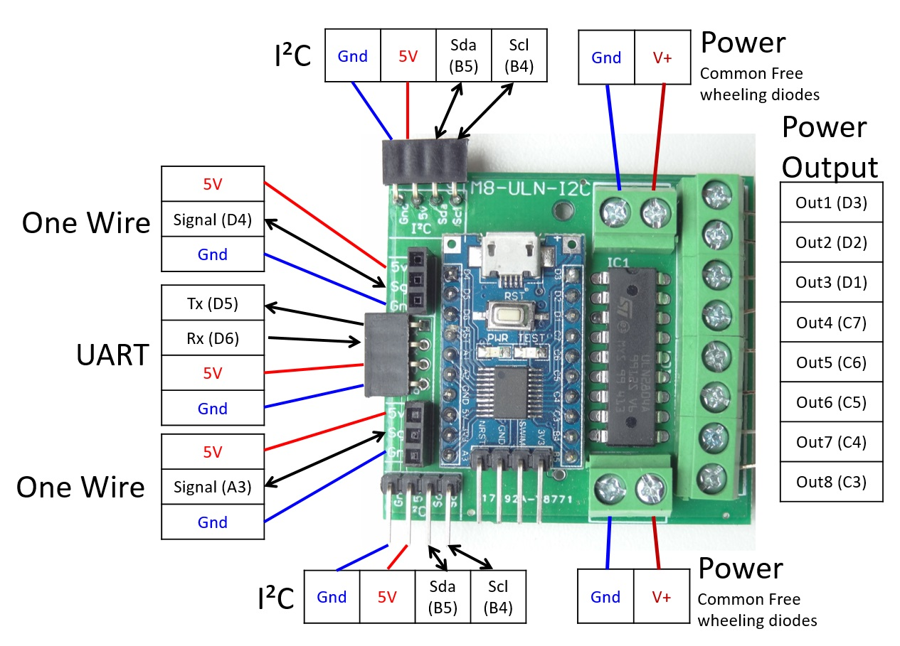

This repository provides PCBs based on the STM8 which is the cheapest microcontroller on the market (Low and production volumes) with the cheapest debug and development environment.
PCB design using the STM8S103F bread board with the nRF24L01+ module. Provides connectors for I²C, UART and One wire.
|
|
This Board includes an STM8L151F3P6 (Low Power) the nRF24L01+, sensors modules : BMP280 (pressure, humidity, temperature), a MAX44009 (Ambient Light) and MRMS211H (Magnetic switches).
 |
Serial port commands issued in an ULN2804 general purpose up to 48V or 500mA per output.
|  |
This Board includes an STM8L151F3P6 (Low Power) the nRF24L01+, sensors modules : BMP280 (pressure, humidity, temperature), a MAX44009 (Ambient Light) and MRMS211H (Magnetic switches).
 |